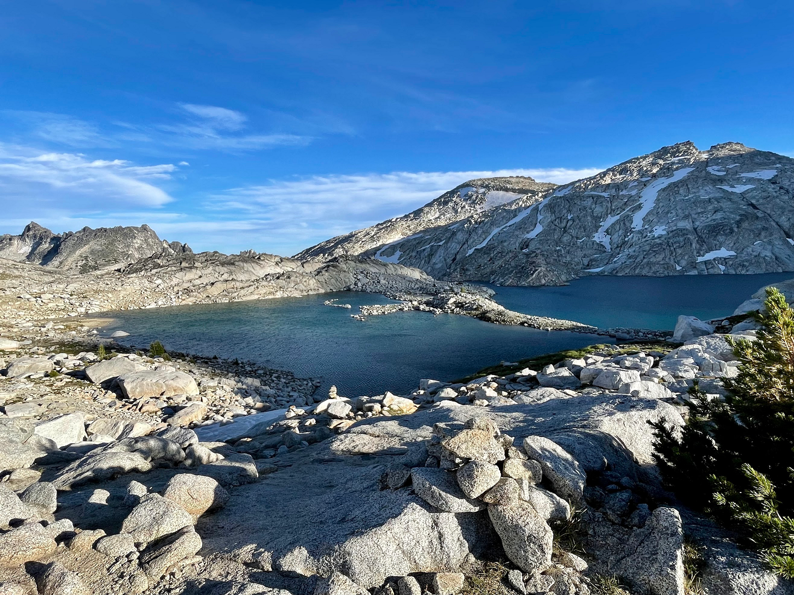

Backpacking the Enchantments - 08/27 and 08/28
This weekend, I procrastinated on other life responsibilities (like doing the dishes, and apartment hunting) to go backpacking! Originally, this trip was planned with Claire, Chris, and myself[1]. However, Chris sprained his ankle in Mt. Rainier National Park last weekend.[2] While Chris has recovered fast this week, he understandably had to bail, despite being one of the architects of the Enchantments backdoor camping location. I left my phone off and in the trunk to save battery, so all of the photos are from Claire (or Claire's phone).
Permits
The enchantments (Mt. Stuart Range) are arguably the best mountains in Washington State - and certainly the best non-national-park. Proximity to the photogenic colchuck lake results in an extremely crowded trailhead, and competition for backpacking permits is immense. 18,835 people applied for Core-Zone permits and 358 people were accepted, for less than a 2% win rate. Worse on weekends.
The Route
While this protects the fragile ecosystem, it creates perverse incentives. There is no permit needed to day-hike. Instead of backpacking, the other 98% of the people who lost the lottery hike it in one day, what's affectionately known as the 'Death March'. It's notorious for Search & Rescue incidents (~50% of all of the Chelan County Mountain Rescue), and the terrain is rugged enough that they only do helicopter evacuations from the core zone, rather than trying to carry people with broken ankles out. It's about ~18-20 miles and ~5,000 vertical feet, on uneven terrain. Instead of going on the 'death march', Chris applied ingenuity to the problem and found a safe place to camp just outside the permit zone, between Little Anapurna and McClellan Peak. To get back into the core from the backdoor, about an hour of 'easy' class I-II scrambling up unconsolidated 2-3ft rocks is necessary.
There's three different parking areas - Colchuck, Snow Lake, and Ingalls Creek, each are between 9-13 miles from the backdoor camping spot. Previously, Chris & I hiked in from Ingalls Creek trailhead, and bushwhacked up to the backdoor spot up the Crystal Creek drainage. With that method, you have to bushwhack for three-five hours, but it's very clearly legal - 100% of that day's route is outside the permit zone, in a wilderness area. Since we only had two days this time, it made sense to go in through the extremely popular colchuck lake trailhead to spend more time in the core enchantment zone. However, both the letter and the spirit of the law matter when interacting with park rangers, so I was ready to explain where we were camping (and why it was allowed under their permit-zone system).
Logistics
Since we got off to a late start from Seattle, we got to the trailhead at about 12:30pm. The trailhead parking for both Colchuck Lake and Eightmile trailhead were full, so we hiked to our hike from 1.2 miles away. After assuaging the fear of the Preventative Search and Rescue volunteers, we were on our way to Colchuck Lake. Two park rangers pulled us over on the way to Colchuck, to ask us if we were backpacking and asked if we had permits. I told them that we were backpacking, but not in the permit zones. After quizzing us on the map for about 5-10 minutes about the proposed campsite, they told us it's valid, but to go further south down the crystal creek drainage to avoid any confusion. He said their colleague would check to make sure we were out of the permit zone[3]. They also collected some data on which peaks we planned to summit the next day.
Colchuck Lake
After two hours or so, we arrived at Colchuck Lake. It's chilly, but swimmable for a short time, unlike the lakes in the upper enchantments.
Aasgard Pass
Once we were finished swimming, we put on our packs and walked around the lake. We didn't bring towels, so it was necessary to air dry. Next, it's necessary to ascend Aasgard Pass, as Claire points out in this photo.
Core Enchantments:
After finally ascending the pass, we hiked through the core, to the backdoor entrance. We had an encounter with a curious mountain goat with spikes. The instructions are to throw rocks at the goats if they get close. Fortunately the warning toss was sufficient for the goat to get the message.
The goat encounter: https://photos.app.goo.gl/j52ixZKr3xb3JZVu6

The Enchantments Backdoor:
It got dark while descending the backdoor, so there's no more photos. Claire went off to take star photos. Our tent is marketed for '3 seasons', but it has a sail area the size of a small car. As a result, despite anchoring it with four 25lb rocks and with packs, the wind picked up and the tent kept deforming by about 3 ft, looking like it was going to snap the poles. The tent started to slide unpredictably, and I tried to hold the corner of the tent while being ready to get out of the way if the wind went the other direction. I didn't want to get pushed over the rocky embankment. Claire rushed back, we took down the tent, and hiked further down the backdoor to some trees. The second time, we didn't put the rainfly on, so the wind goes through the tent instead of pushing the tent. To add insult to injury, the tent weighed 5lb.
Little Annapurna:
In the morning, we climbed out of the backdoor and up Little Annapurna (largely a walk-up). We thought about climbing Dragontail, but decided to skip it since we were a bit behind schedule (and the joints were sure to be hurting already at 6000' of descent).
Aasgard pass took forever to carefully descend. A speedy couple passed us on the way down. Then a few hours later, we were surprised by seeing that same couple presumably skinny dipping at Colchuck lake. They ran behind the rocks once they saw us on the trail passing by.
After a quick swim at the other side of Colchuck, we returned to the car. We got pizza & bratwurst in the nearby Leavenworth WA, probably on the smellier end of customers despite the swimming.
 Until next time,
Peter
[1] Ariana's in VA, and Christy & Eric moved to NYC.
[2] Unfortunately, 21 miles into a 36-mile run at 'Northern Loop' on Mt. Rainier. He claims the pain was '1/5' while running the remaining 13 miles, but it swelled up the next day. He's been taking it easy this week.
[3] This was almost certainly a bluff. In reality, park rangers are unlikely to climb down 1,000' of scrambles on unpleasant, loose rock.
Until next time,
Peter
[1] Ariana's in VA, and Christy & Eric moved to NYC.
[2] Unfortunately, 21 miles into a 36-mile run at 'Northern Loop' on Mt. Rainier. He claims the pain was '1/5' while running the remaining 13 miles, but it swelled up the next day. He's been taking it easy this week.
[3] This was almost certainly a bluff. In reality, park rangers are unlikely to climb down 1,000' of scrambles on unpleasant, loose rock.